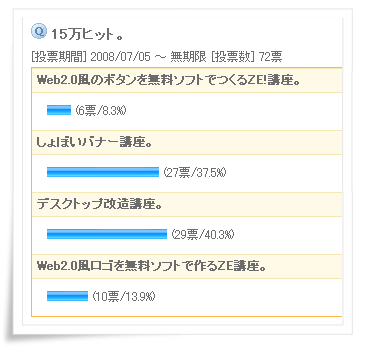
�܂�����Ȋ����ŁA�e���v�����Ȃ̂ɂȂ����f�X�N�g�b�v�����u����A�o�i�[�u���ȂǁE�E�E�B
�܂����V�тł��ˁi��
���ӁI�I
�V�X�e���̓����̃t�@�C����ύX������܂��̂ŁA���ȐӔC�ł��肢���܂��B
�܂��A�N���ł��Ȃ��Ȃ�ꍇ������܂��̂ł����̂Ƃ�����\���ɍl���Ă��������B
�Ǘ��l�̊��́AWindowsXP
Sp3 Pro( Mem : 1GB , CPU : Celeron 370
1.5G)�ł��B
�킩��Ȃ��ꍇ�́A�X�^�[�g���}�C�R���s���[�^�[���E�N���b�N���v���p�e�B�Ŋm�F�����Ă��������B
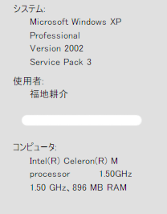
�܂��́A�X�^�[�g�����ׂẴv���O�������A�N�Z�T�����V�X�e���c�[�����V�X�e���̕������N�����܂��B
����������A�����|�C���g�̍쐬�Ŗ��O�����܂��B
Xp Sp3 �̏ꍇ���������@
Xp Sp2 , Sp1 �̏ꍇ��������
Sp3�̏ꍇ
�ۑ��B
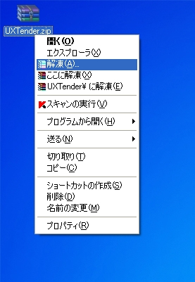
�𓀃\�t�g�ʼn𓀁B
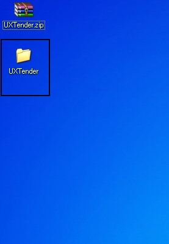
�𓀂ł����t�@�C�����J���܂��B
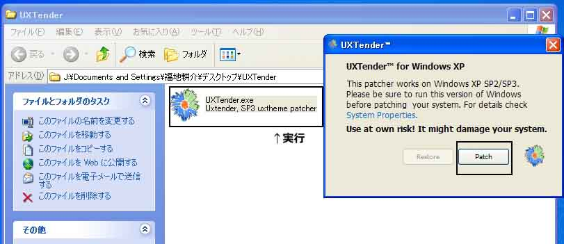
UXTender.exe
(UxTender)���_�u���N���b�N�B
�N����������APatch���N���b�N�B

OK���N���b�N���čċN�����Ă��������B
Sp2�̏ꍇ�B
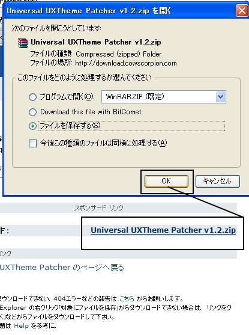
�������iUniversal~)���N���b�N����B�ۑ��B
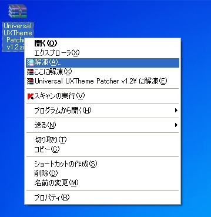
�𓀁B
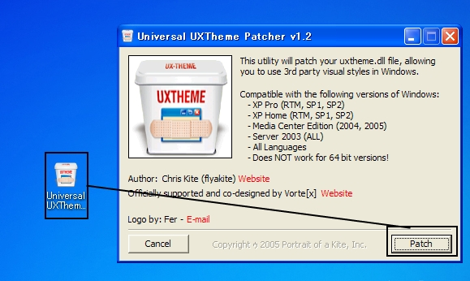
�𓀂ł�����AUniversal
UXThem���_�u���N���b�N�BPatch���N���b�N�B
�ċN�����Ă��������B
�ċN��������E�E�E�E�B
�ċN�����Ă������ς��Ȃ��Ǝv���܂����A���̂܂܁B
RESOURCE���܂ɍs���č��̃��j���[��VisualStyle���N���b�N���܂��B
�ōD���ȃe�[�}�̉摜���N���b�N���č���Download���N���b�N���܂��B
�����Ƃ�������A
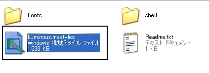
�łĂ�����.msstyle���_�u���N���b�N�B
�����������ʂ̃v���p�e�B���ł��܂��B
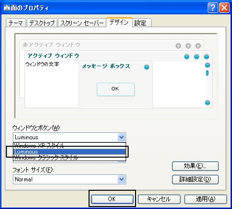
��OK�������܂��B
�Ə����e�[�}����ς��܂����B
�ł�BWindowsXP�W���̃}�E�X�J�[�\������ς��Ă݂܂��傤�B
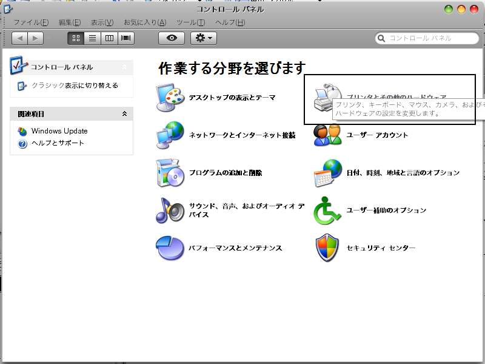
�X�^�[�g���R���g���[���p�l�����}�E�X�i����
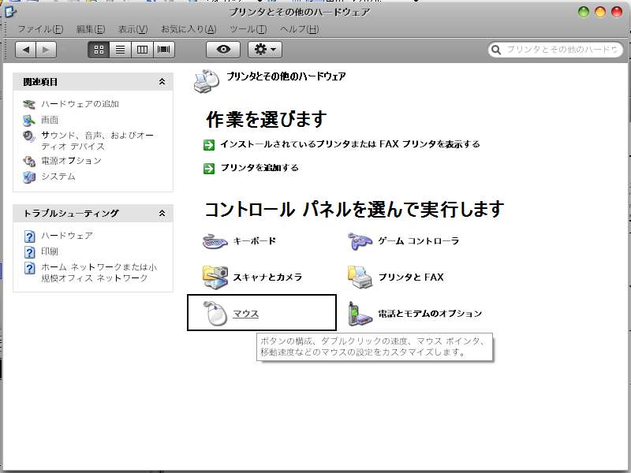
�}�E�X
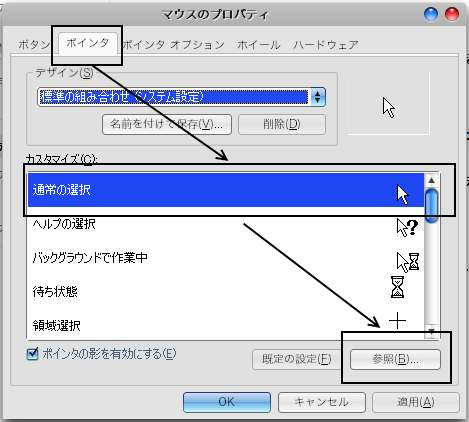
�^�u�Ń|�C���^���B
�����ĕς������|�C���^��I���Q�ƁB
�J�[�\����Google�Œ��ׂĂ݂Ă��������B
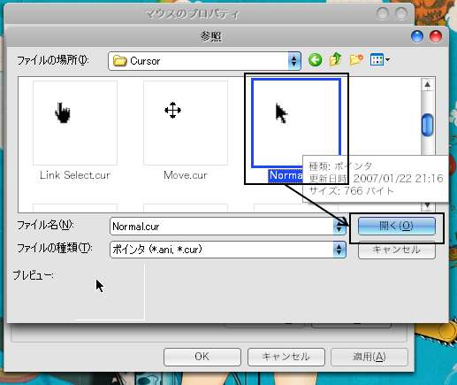
�Q�Ɓ��J�[�\���t�@�C���̂Ƃ���ւ����đI���B
�J���B
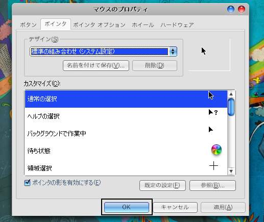
OK�B
�ŕς�����͂��ł��B